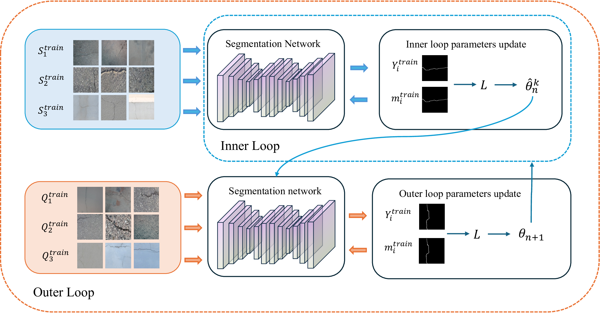
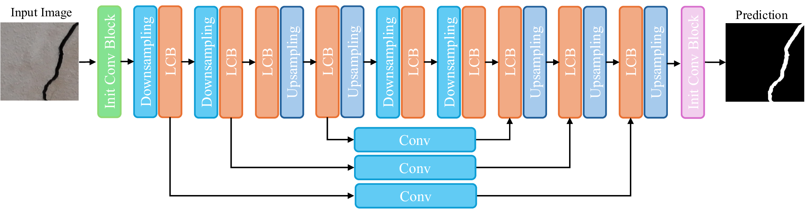
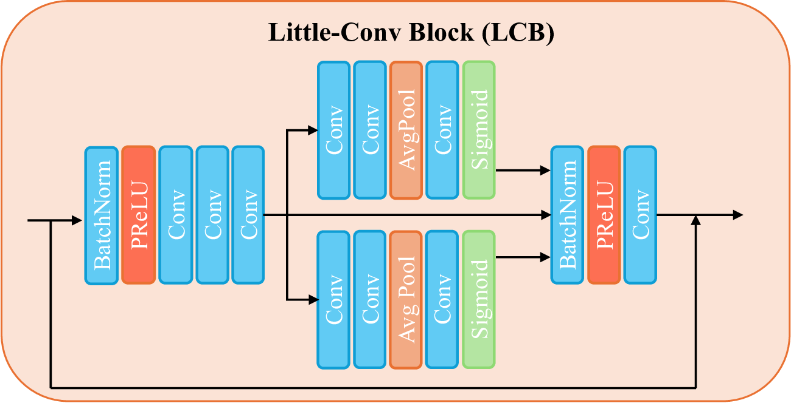
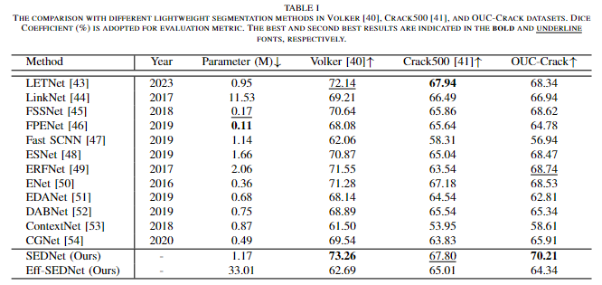

Drone-Based Wall Crack Detection Using Model-Agnostic Meta-Learning
|  |
The MAMl-SegNet architecture we propose, which comprises a Crack-MAMl and a lightweight Stacked Encoder-Decoder Segmentation Network.
Abstract
With the urbanization process and aging of buildings, wall crack detection plays a crucial role in the maintenance and safety of building structures. Due to the inherent characteristics of defects, however, cracks in the wall are relatively sparse, compared to the normal area. High-altitude regions are also difficult to access. As a result, large wall crack data sets are rare. This issue impairs the training of deep networks and may lead to the suboptimal detection result. To address the issue, we first capture a set of wall crack images using a drone, which are comprised of a new wall crack data set, namely, Ocean University of China Wall Crack Data Set (OUC-Crack). Then we propose a drone-based wall crack detection system, which consists of a drone platform and a crack detection network referred to as the Model-Agnostic Meta-Learning Based Segmentation Network (MAML-SegNet). The MAML-SegNet is built on top of a Stacked Encoder-Decoder Segmentation Network (SEDNet) and an MAML method (Crack-MAML) which is adopted to suit the wall crack detection task. Therefore, only a small number of training images are required. To fulfil the real-time detection task on drones, we further develop an efficient SEDNet (EFF-SEDNet). The proposed system is tested on our OUC-Crack and two publicly available crack data sets, including Volker and Crack500. Experimental results show that our SEDNet outperforms, or at least performs comparably to, its counterparts. In addition, the real-time detection can be achieved with a proper accuracy when the EFF-SEDNet is deployed on a drone. These promising results should be due to the few-shot learning ability of meta-learning and the efficient network design.
Links


The OUC-Crack Data Set

The Stacked Encoder-Decoder Segmentation Network


Experimental Results
|  |

|
Qualitative Results on Volker, Crack500, OUC-Crack data set.